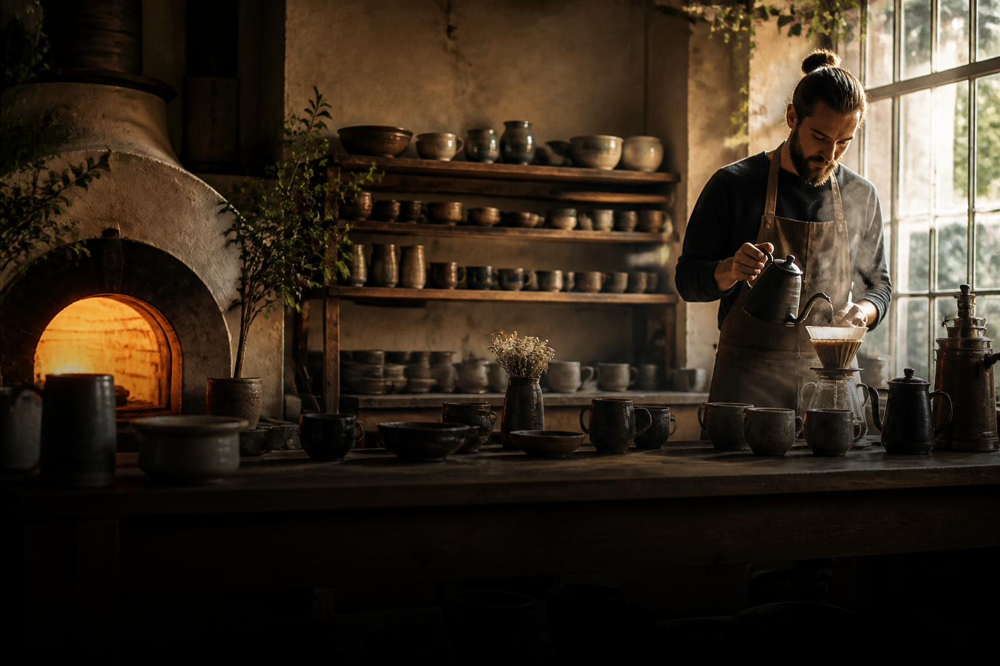

Ember espresso
Single origin, kiln-side roast, short and bright.

Coffee poured beside clay still warm from the fire.
Place: the kiln room at first light — shelves of cups, open fire, steam from the pour-over bar.
Throw, glaze, and drink in the same room. Cups leave with the heat still in them.
Confirmations use plain Action + Item + Limit — no panic tone.